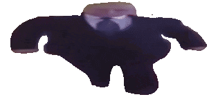
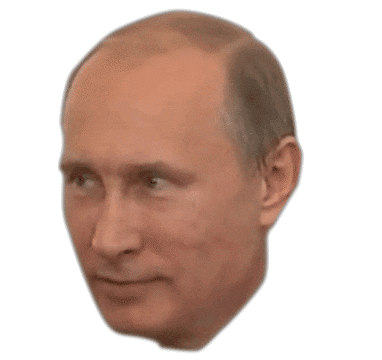

Who is wide putin?
Wide Putin Walking, also known as IT'S HIM,
is a viral video of Russian President Vladimir Putin walking down a hallway,
streched and set to Piano Fantasia's “Song For Denise”(Maxi version).
The video is often paired with a caption or used to fill blank space in exploitables.
It first appeared online in early February 2020,
mostly spreading on YouTube and Discord in May 2020.
When did he first spawn?
The footage used comes from Vladimir Putin's fourth term inauguration,
which was streamed by RT on May 7th, 2018.
The oldest recorded instance of Putin Walking edits was uploaded on Telegram
to the channel "Ручка" on February 2nd, 2020, by the user ToThePan.
Another stretched version was uploaded on May 27th, 2020 by YouTube user FlobySop64.
The video, titled, “Wide Putin Walking,” has since received over 25,000 views, 1,900 likes and 197 comments.
Soon after the distorted version was uploaded to Youtube, the IT'S HIM Discord server was created by user i5kilo to spread the meme to other communities.
Wide Putin Walk was shared to various Discord servers and the caption "IT'S HIM" was popularized.
Variations of Wide Putin
YouTuber Giancarlos32 uploaded a compilation of Putin Walking memes on June 5th, 2020.
In the video, Giancarlos32 stated the clips used were pulled from Callmecarson's Discord server where the meme also spread.
On June 6th, 2020, YouTube user Lord Super Succ uploaded an extended version of the meme to their channel
featuring the full clip of Putin's inauguration, receiving over 20,000 views, 1,600 likes and 240 comments.
YouTuber Memetastic then uploaded multiple meme variants of the clip to their channel
named "The Good Ending", "The Neutral Ending" and "The Bad Ending"
Visitor that's enough of Putin. What's your name?
You really thought you could get away from wide putin?

